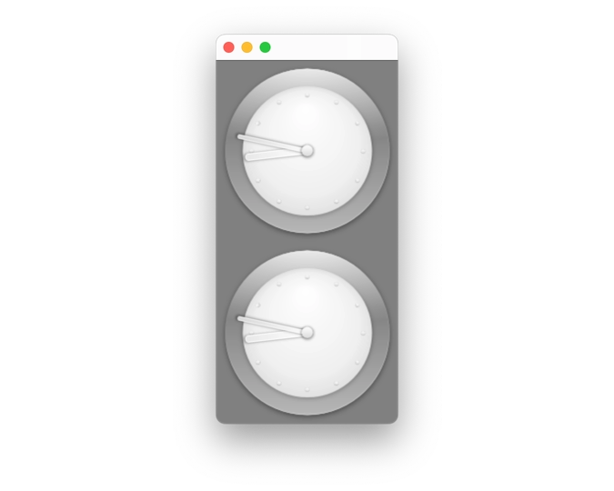

Time Client Application
A client who holds a replica of a time object from a server and displays the time in a clock.
The Time Client Application opens a blue window with a message. When you click once, it displays a clock. When you click again, two clocks, then it repeats. The clock is defined in Clock.qml and uses the Time QML-type, implemented in C++, to set the time of the clock using the time on the server.

Before Running the Time Client Application
To run this example, Time Server Application must already be running on the same host as this application. It sets up a registry server and hosts an instance of a subclass of the MinuteTimerSimpleSource class. If it is not running, there will be an error message in the window.
Defining Remote Objects using a REP-file
The REP-file "timemodel.rep" in the parent directory of this application is used to generate the header-files used by both applications. For this application, the generated "rep_timemodel_replica.h" file defines MinuteTimerReplica, the replica of MinuteTimer, and other related classes.
The TimeModel Class
The TimeModel class in plugin.h and plugin.cpp implements the QML-type Time. It contacts the registry server on localhost using the URL "local:registry", acquires a replica, MinuteTimerReplica, and connects to its signals. The properties are automatically updated.
The QML Types
The QML defined in "Clock.qml" draws a watch using the properties hours and minutes.
The application opens a window with the contents "plugins.qml". It changes between displaying different content using a Loader, cycling for each click between "plugins0.qml", "plugins1.qml", and "plugins2.qml".
While "plugins0.qml" displays a blue screen with a message, the custom QML-type Clock is used in "plugins1.qml", with the properties hours and minutes set to the hour and minute properties of Time. The "plugins2.qml" file is similar but displays two clocks.
import QtQuick import TimeExample // import types from the plugin Rectangle { width: 200 height: 400 color: "blue" Clock { id: clock1 anchors.top: parent.top Time { // this class is defined in C++ (plugin.cpp) id: time } hours: time.hour minutes: time.minute valid: time.isValid } }
See also Time Server Application.